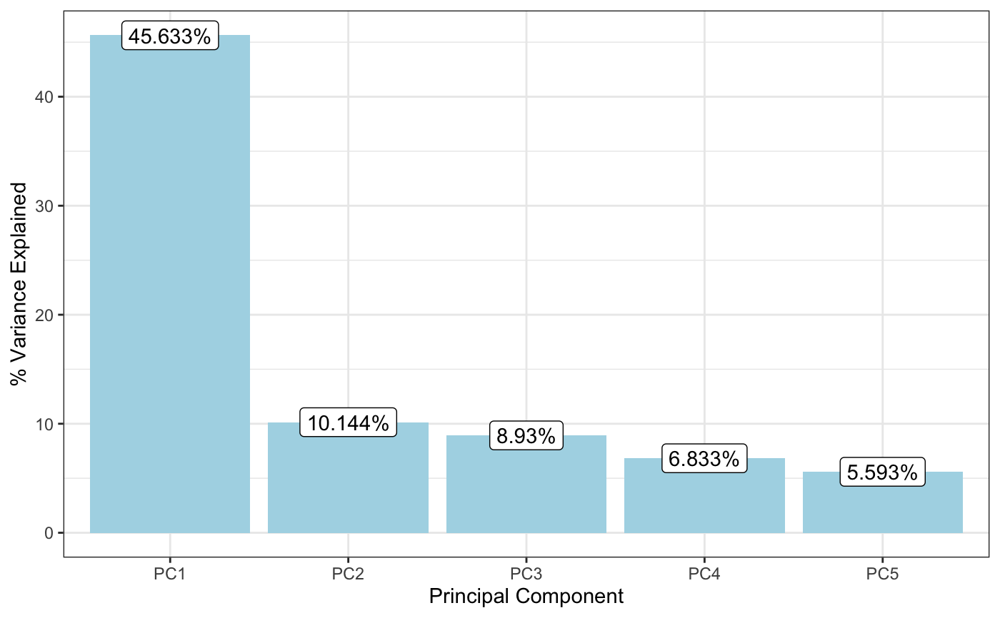
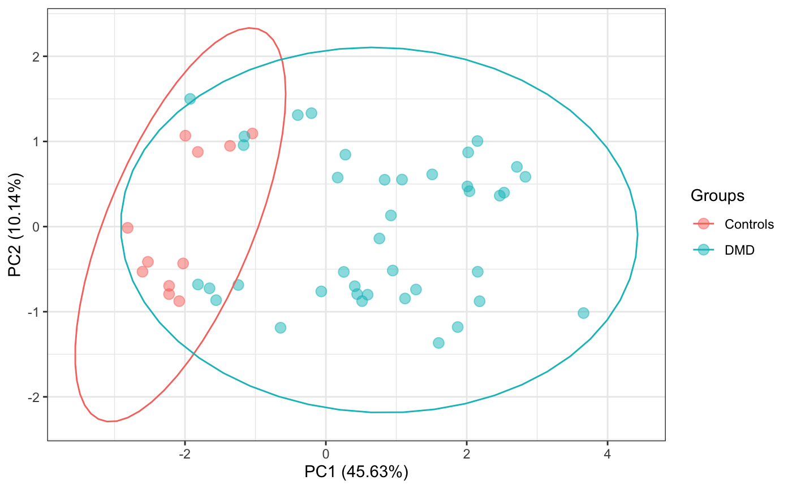
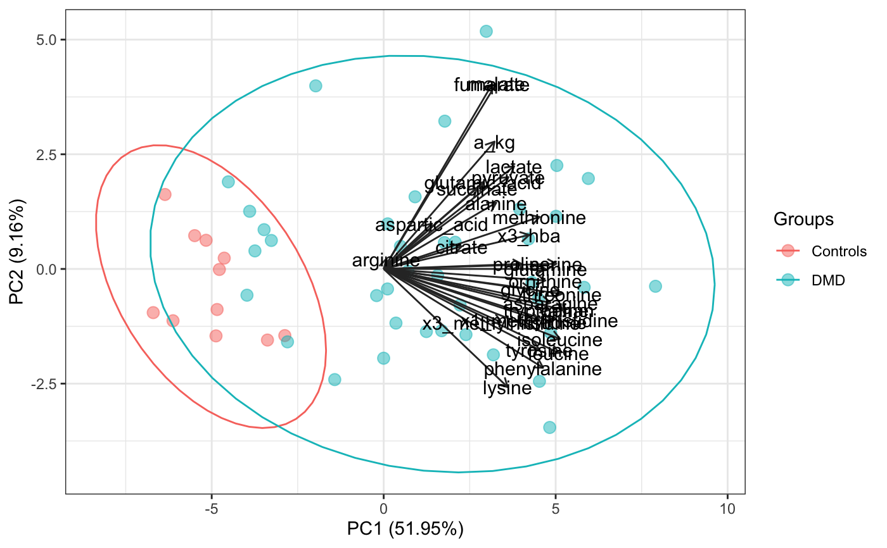
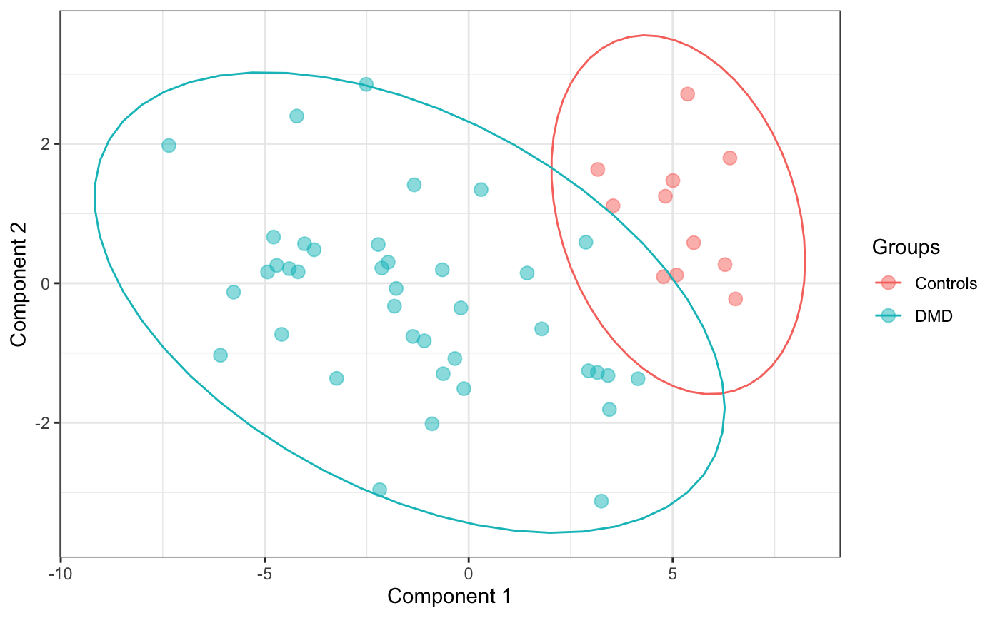
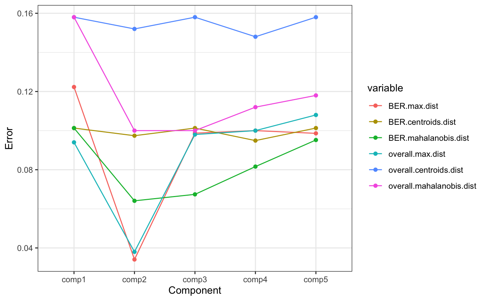
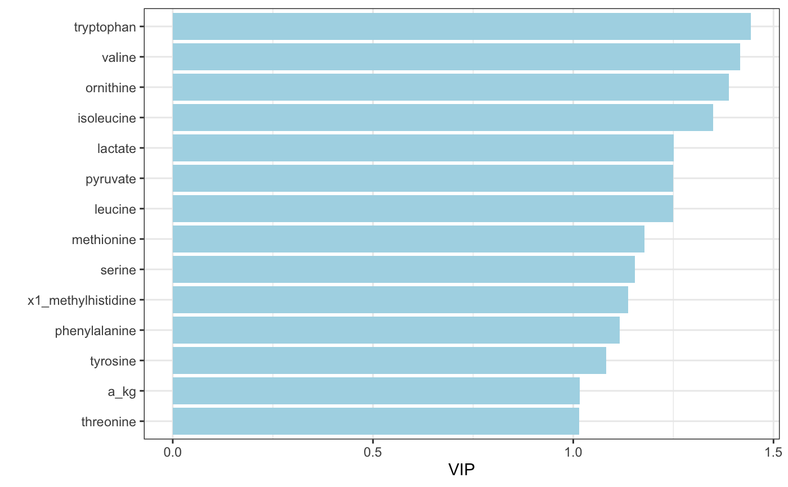
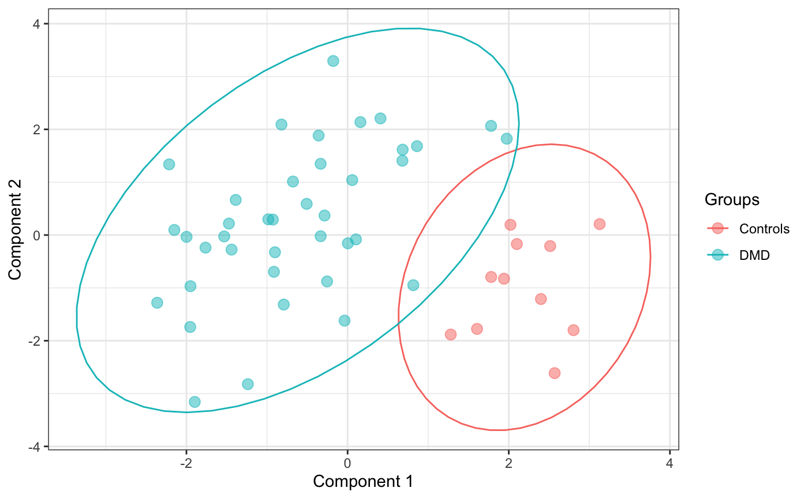
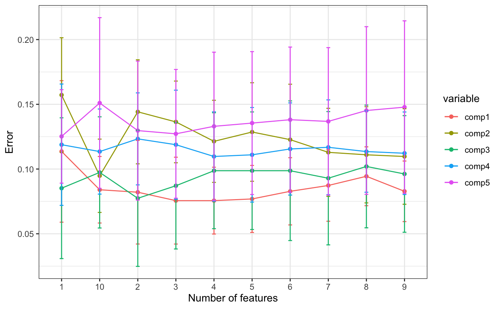

R/PomaMultivariate.R
PomaMultivariate.RdPomaMultivariate() allows users to perform different multivariate statistical analysis on MS data.
PomaMultivariate( data, method = "pca", components = 5, center = FALSE, scale = FALSE, labels = FALSE, load_length = 1, ellipse = TRUE, validation = "Mfold", folds = 5, nrepeat = 10, vip = 1.5, num_features = 10 )
| data | A MSnSet object. First |
|---|---|
| method | A multivariate method. Options are: "pca", "plsda" and "splsda". |
| components | Numeric. Number of components to include in the model. Default is 5. |
| center | Logical that indicates whether the variables should be shifted to be zero centered. Default is FALSE. |
| scale | Logical that indicates whether the variables should be scaled to have unit variance before the analysis takes place. Default is FALSE. |
| labels | Logical indicating if sample names should be plotted or not. |
| load_length | Numeric between 1 and 2. Define the length of biplot loadings. Default is 1. |
| ellipse | Logical that indicates whether a 95%CI ellipse should be plotted in scores plot. Default is TRUE. |
| validation | (Only for "plsda" and "splsda" methods) Validation method. Options are "Mfold" and "loo". |
| folds | (Only for "plsda" and "splsda" methods) Numeric. Number of folds for Mfold validation method (default is 5). If the validation method is loo, this value will become to 1. |
| nrepeat | (Only for "plsda" and "splsda" methods) Numeric. Number of iterations for the validation method selected. |
| vip | (Only for "plsda" method) Numeric indicating VIP cutoff to select features that will be displayed in vip plot. |
| num_features | (Only for "splsda" method) Numeric. Number of variables selected to discriminate groups. |
A list with all results for multivariate statistical analysis including plots and data frames.
library(POMA) data("st000336") # PCA st000336 %>% PomaImpute() %>% PomaNorm() %>% PomaOutliers() %>% PomaMultivariate(method = "pca")#> Warning: method argument is empty! KNN will be used#> Warning: method argument is empty! log_pareto will be used#> $screeplot#> #> $scoresplot#> #> $score_data #> PC1 PC2 PC3 PC4 PC5 #> 1 -2.6032 -0.5299 -0.7001 -0.6829 0.1920 #> 2 -2.0265 -0.4332 -0.9592 -0.9036 0.0643 #> 3 -1.3610 0.9481 -0.6796 -0.0458 0.0154 #> 4 -1.0428 1.0933 -0.5792 -0.7301 -0.3076 #> 5 -2.8140 -0.0149 -0.5885 0.0920 -0.1298 #> 6 -2.2262 -0.7934 0.4013 -0.1161 1.0950 #> 7 -2.2257 -0.6961 0.0968 -0.2643 -0.1899 #> 8 -2.0817 -0.8755 0.0441 -0.6159 0.6870 #> 9 -1.8180 0.8770 0.0923 -1.3298 -0.4084 #> 10 -1.9944 1.0678 -0.1253 -0.1539 -0.2836 #> 11 -2.5264 -0.4144 0.3554 -0.2193 -1.0112 #> 12 2.4687 0.3632 0.4114 -0.9516 -0.4639 #> 13 0.8347 0.5497 0.5828 0.2026 0.6036 #> 14 -0.6430 -1.1884 1.3500 -0.3524 -0.6029 #> 15 0.9495 -0.5162 -0.8569 -0.8515 0.0299 #> 16 2.7123 0.7014 -0.0488 0.2594 -0.1057 #> 17 2.1557 -0.5305 -1.8987 -0.3305 0.2385 #> 18 1.1243 -0.8449 -0.3228 -0.1506 -1.0720 #> 19 3.6582 -1.0159 -0.5045 -0.2162 0.5042 #> 20 0.5143 -0.8754 -0.2988 0.0697 0.0429 #> 21 1.8717 -1.1803 -0.2694 -0.1343 1.0972 #> 22 1.0812 0.5520 -0.2434 -0.4270 0.0738 #> 23 -1.2436 -0.6862 0.1005 0.1580 -0.4327 #> 24 -1.6519 -0.7251 0.5573 0.6534 0.2683 #> 25 2.0389 0.4156 0.5812 -0.7578 -0.3569 #> 26 0.2769 0.8449 -0.5694 0.6714 -0.8532 #> 27 2.0203 0.8715 -0.7969 0.2869 0.6800 #> 28 2.8328 0.5848 0.9809 0.2479 -0.4459 #> 29 1.6018 -1.3669 1.5860 -0.1141 -1.2856 #> 30 2.1522 1.0047 -0.0853 0.7560 -0.6221 #> 31 1.5099 0.6130 -0.4960 -1.8367 0.7993 #> 32 -1.8154 -0.6805 0.8383 0.0568 0.0831 #> 33 -1.5580 -0.8644 -0.0264 0.2913 -0.0573 #> 34 0.2544 -0.5324 -1.4241 -0.4131 -0.6748 #> 35 2.5299 0.3987 1.0133 -0.4768 -0.3929 #> 36 1.2799 -0.7394 -1.2892 -0.1215 -0.8347 #> 37 0.9236 0.1309 1.9596 -0.8390 0.9596 #> 38 -0.2046 1.3321 0.2241 0.7566 0.8576 #> 39 2.1827 -0.8770 -0.8748 0.3344 0.4809 #> 40 0.5926 -0.8002 -0.8758 0.8718 -0.0312 #> 41 0.7603 -0.1398 -0.2143 2.1038 -0.5847 #> 42 0.4102 -0.7003 -0.0229 0.7651 -0.0456 #> 43 2.0093 0.4717 0.6072 -0.3270 0.6182 #> 44 -1.1682 0.9572 0.5758 0.0273 -0.7522 #> 45 0.4443 -0.7933 0.5978 0.8448 0.0437 #> 46 -0.0648 -0.7615 -0.1670 0.8122 1.3075 #> 47 -1.1563 1.0589 -0.5392 -0.0680 -0.1020 #> 48 -0.3990 1.3098 -1.0285 0.2484 -0.4729 #> 49 0.1675 0.5756 0.8254 -0.1017 0.2624 #> 50 -1.9268 1.4996 0.2015 1.1901 0.8766 #> #> $eigenvalues #> Principal_Component Percent_Variance_Explained #> 1 PC1 45.6327 #> 2 PC2 10.1436 #> 3 PC3 8.9303 #> 4 PC4 6.8329 #> 5 PC5 5.5929 #> #> $biplot#># PLSDA st000336 %>% PomaImpute() %>% PomaNorm() %>% PomaOutliers() %>% PomaMultivariate(method = "plsda", vip = 1)#> Warning: method argument is empty! KNN will be used#> Warning: method argument is empty! log_pareto will be used#> Warning: validation argument is empty! Mfold will be used#> #> comp 1 #> | | | 0% | |= | 2% | |=== | 4% | |==== | 6% | |====== | 8% | |======= | 10% | |======== | 12% | |========== | 14% | |=========== | 16% | |============= | 18% | |============== | 20% | |=============== | 22% | |================= | 24% | |================== | 26% | |==================== | 28% | |===================== | 30% | |====================== | 32% | |======================== | 34% | |========================= | 36% | |=========================== | 38% | |============================ | 40% | |============================= | 42% | |=============================== | 44% | |================================ | 46% | |================================== | 48% | |=================================== | 50% | |==================================== | 52% | |====================================== | 54% | |======================================= | 56% | |========================================= | 58% | |========================================== | 60% | |=========================================== | 62% | |============================================= | 64% | |============================================== | 66% | |================================================ | 68% | |================================================= | 70% | |================================================== | 72% | |==================================================== | 74% | |===================================================== | 76% | |======================================================= | 78% | |======================================================== | 80% | |========================================================= | 82% | |=========================================================== | 84% | |============================================================ | 86% | |============================================================== | 88% | |=============================================================== | 90% | |================================================================ | 92% | |================================================================== | 94% | |=================================================================== | 96% | |===================================================================== | 98% | |======================================================================| 100% #> comp 2 #> | | | 0% | |= | 2% | |=== | 4% | |==== | 6% | |====== | 8% | |======= | 10% | |======== | 12% | |========== | 14% | |=========== | 16% | |============= | 18% | |============== | 20% | |=============== | 22% | |================= | 24% | |================== | 26% | |==================== | 28% | |===================== | 30% | |====================== | 32% | |======================== | 34% | |========================= | 36% | |=========================== | 38% | |============================ | 40% | |============================= | 42% | |=============================== | 44% | |================================ | 46% | |================================== | 48% | |=================================== | 50% | |==================================== | 52% | |====================================== | 54% | |======================================= | 56% | |========================================= | 58% | |========================================== | 60% | |=========================================== | 62% | |============================================= | 64% | |============================================== | 66% | |================================================ | 68% | |================================================= | 70% | |================================================== | 72% | |==================================================== | 74% | |===================================================== | 76% | |======================================================= | 78% | |======================================================== | 80% | |========================================================= | 82% | |=========================================================== | 84% | |============================================================ | 86% | |============================================================== | 88% | |=============================================================== | 90% | |================================================================ | 92% | |================================================================== | 94% | |=================================================================== | 96% | |===================================================================== | 98% | |======================================================================| 100% #> comp 3 #> | | | 0% | |= | 2% | |=== | 4% | |==== | 6% | |====== | 8% | |======= | 10% | |======== | 12% | |========== | 14% | |=========== | 16% | |============= | 18% | |============== | 20% | |=============== | 22% | |================= | 24% | |================== | 26% | |==================== | 28% | |===================== | 30% | |====================== | 32% | |======================== | 34% | |========================= | 36% | |=========================== | 38% | |============================ | 40% | |============================= | 42% | |=============================== | 44% | |================================ | 46% | |================================== | 48% | |=================================== | 50% | |==================================== | 52% | |====================================== | 54% | |======================================= | 56% | |========================================= | 58% | |========================================== | 60% | |=========================================== | 62% | |============================================= | 64% | |============================================== | 66% | |================================================ | 68% | |================================================= | 70% | |================================================== | 72% | |==================================================== | 74% | |===================================================== | 76% | |======================================================= | 78% | |======================================================== | 80% | |========================================================= | 82% | |=========================================================== | 84% | |============================================================ | 86% | |============================================================== | 88% | |=============================================================== | 90% | |================================================================ | 92% | |================================================================== | 94% | |=================================================================== | 96% | |===================================================================== | 98% | |======================================================================| 100% #> comp 4 #> | | | 0% | |= | 2% | |=== | 4% | |==== | 6% | |====== | 8% | |======= | 10% | |======== | 12% | |========== | 14% | |=========== | 16% | |============= | 18% | |============== | 20% | |=============== | 22% | |================= | 24% | |================== | 26% | |==================== | 28% | |===================== | 30% | |====================== | 32% | |======================== | 34% | |========================= | 36% | |=========================== | 38% | |============================ | 40% | |============================= | 42% | |=============================== | 44% | |================================ | 46% | |================================== | 48% | |=================================== | 50% | |==================================== | 52% | |====================================== | 54% | |======================================= | 56% | |========================================= | 58% | |========================================== | 60% | |=========================================== | 62% | |============================================= | 64% | |============================================== | 66% | |================================================ | 68% | |================================================= | 70% | |================================================== | 72% | |==================================================== | 74% | |===================================================== | 76% | |======================================================= | 78% | |======================================================== | 80% | |========================================================= | 82% | |=========================================================== | 84% | |============================================================ | 86% | |============================================================== | 88% | |=============================================================== | 90% | |================================================================ | 92% | |================================================================== | 94% | |=================================================================== | 96% | |===================================================================== | 98% | |======================================================================| 100% #> comp 5 #> | | | 0% | |= | 2% | |=== | 4% | |==== | 6% | |====== | 8% | |======= | 10% | |======== | 12% | |========== | 14% | |=========== | 16% | |============= | 18% | |============== | 20% | |=============== | 22% | |================= | 24% | |================== | 26% | |==================== | 28% | |===================== | 30% | |====================== | 32% | |======================== | 34% | |========================= | 36% | |=========================== | 38% | |============================ | 40% | |============================= | 42% | |=============================== | 44% | |================================ | 46% | |================================== | 48% | |=================================== | 50% | |==================================== | 52% | |====================================== | 54% | |======================================= | 56% | |========================================= | 58% | |========================================== | 60% | |=========================================== | 62% | |============================================= | 64% | |============================================== | 66% | |================================================ | 68% | |================================================= | 70% | |================================================== | 72% | |==================================================== | 74% | |===================================================== | 76% | |======================================================= | 78% | |======================================================== | 80% | |========================================================= | 82% | |=========================================================== | 84% | |============================================================ | 86% | |============================================================== | 88% | |=============================================================== | 90% | |================================================================ | 92% | |================================================================== | 94% | |=================================================================== | 96% | |===================================================================== | 98% | |======================================================================| 100%#> $scoresplot#> #> $errors_plsda #> Component variable value #> 1 comp1 BER.max.dist 0.1223 #> 2 comp2 BER.max.dist 0.0341 #> 3 comp3 BER.max.dist 0.0987 #> 4 comp4 BER.max.dist 0.1000 #> 5 comp5 BER.max.dist 0.0986 #> 6 comp1 BER.centroids.dist 0.1013 #> 7 comp2 BER.centroids.dist 0.0974 #> 8 comp3 BER.centroids.dist 0.1013 #> 9 comp4 BER.centroids.dist 0.0949 #> 10 comp5 BER.centroids.dist 0.1013 #> 11 comp1 BER.mahalanobis.dist 0.1013 #> 12 comp2 BER.mahalanobis.dist 0.0641 #> 13 comp3 BER.mahalanobis.dist 0.0674 #> 14 comp4 BER.mahalanobis.dist 0.0816 #> 15 comp5 BER.mahalanobis.dist 0.0952 #> 16 comp1 overall.max.dist 0.0940 #> 17 comp2 overall.max.dist 0.0380 #> 18 comp3 overall.max.dist 0.0980 #> 19 comp4 overall.max.dist 0.1000 #> 20 comp5 overall.max.dist 0.1080 #> 21 comp1 overall.centroids.dist 0.1580 #> 22 comp2 overall.centroids.dist 0.1520 #> 23 comp3 overall.centroids.dist 0.1580 #> 24 comp4 overall.centroids.dist 0.1480 #> 25 comp5 overall.centroids.dist 0.1580 #> 26 comp1 overall.mahalanobis.dist 0.1580 #> 27 comp2 overall.mahalanobis.dist 0.1000 #> 28 comp3 overall.mahalanobis.dist 0.1000 #> 29 comp4 overall.mahalanobis.dist 0.1120 #> 30 comp5 overall.mahalanobis.dist 0.1180 #> #> $errors_plsda_plot#> #> $plsda_vip_table #> feature comp1 comp2 comp3 comp4 comp5 #> 1 tryptophan 1.4435027 1.3849840 1.3856870 1.3640611 1.3677312 #> 2 valine 1.4166978 1.2626575 1.2250379 1.2053922 1.1858640 #> 3 ornithine 1.3892987 1.3113408 1.2697619 1.2490888 1.2240565 #> 4 isoleucine 1.3499518 1.1916874 1.2018435 1.1832991 1.1658820 #> 5 lactate 1.2511680 1.2772284 1.2088886 1.2194013 1.2013575 #> 6 pyruvate 1.2501886 1.3070333 1.3519295 1.3319411 1.3119904 #> 7 leucine 1.2501359 1.0918257 1.0373346 1.0294630 1.0260515 #> 8 methionine 1.1784449 1.0325895 0.9715088 0.9680863 0.9485824 #> 9 serine 1.1537516 1.0306085 0.9935809 0.9818230 0.9619894 #> 10 x1_methylhistidine 1.1363792 0.9916321 0.9500182 0.9488049 0.9326240 #> 11 phenylalanine 1.1155546 0.9776697 0.9332989 0.9567011 0.9379805 #> 12 tyrosine 1.0822385 0.9533959 0.9079028 0.9846031 0.9772462 #> 13 a_kg 1.0161441 1.0083018 0.9617100 0.9849371 0.9739257 #> 14 threonine 1.0153261 1.0941330 1.0294970 1.0120153 0.9915603 #> 15 x3_hba 0.9801537 0.8819868 0.9109956 0.9000690 0.8927060 #> 16 glutamic_acid 0.9517051 0.9515705 1.0521336 1.0411853 1.0357289 #> 17 asparagine 0.9459038 1.0142571 0.9982896 0.9903644 0.9734560 #> 18 proline 0.9077696 0.8324007 0.8808040 0.8716300 0.8545575 #> 19 malate 0.8728901 0.7660207 0.8016535 0.8657224 0.8653846 #> 20 glutamine 0.8326399 1.0860884 1.0412344 1.0249230 1.0043082 #> 21 fumarate 0.7777869 0.6833587 0.8532369 0.8651912 0.9148997 #> 22 histidine 0.7640035 1.2750807 1.2882273 1.2810681 1.2553944 #> 23 x3_methylhistidine 0.7446629 0.6973362 0.6589469 0.6534582 0.6403558 #> 24 glycine 0.7259586 0.9982622 0.9503808 0.9399075 0.9214817 #> 25 aspartic_acid 0.6478729 0.8398284 0.9577721 0.9415546 0.9486792 #> 26 lysine 0.6402031 0.8233920 0.7818048 0.7715639 0.8754162 #> 27 succinate 0.6095834 0.5498346 0.5954811 0.6030568 0.7228392 #> 28 alanine 0.5942252 0.7356104 0.6952978 0.7756402 0.7670500 #> 29 citrate 0.2734493 0.6666822 0.8320477 0.8197505 0.9016379 #> 30 arginine 0.1882310 0.4555670 0.6508565 0.6861571 0.7867998 #> #> $vip_plsda_plot#> #> $score_data #> comp1 comp2 comp3 comp4 comp5 #> 1 6.4037 1.7960 -0.0962 -0.1638 -0.2624 #> 2 5.3665 2.7123 0.2787 -0.1694 0.1575 #> 3 3.5381 1.1108 1.5919 -2.0752 0.2884 #> 4 3.1634 1.6315 0.7791 -0.9392 0.2898 #> 5 6.5412 -0.2252 -0.4363 -0.9536 -0.9858 #> 6 5.0953 0.1177 0.3287 -0.0104 -0.6566 #> 7 5.5152 0.5808 0.6028 0.0300 -0.9702 #> 8 4.8218 1.2477 -0.0342 0.5022 -0.7012 #> 9 5.0048 1.4722 0.2717 0.9779 0.6627 #> 10 4.7751 0.0933 0.3340 -0.8803 -0.0008 #> 11 6.2830 0.2674 1.7193 -0.0861 -0.7548 #> 12 -4.7832 0.6623 -0.0338 1.3029 -0.2236 #> 13 -1.8199 -0.3287 1.1953 -0.9671 -0.5954 #> 14 1.7914 -0.6545 0.6721 2.4020 -0.8659 #> 15 -1.3352 1.4108 -1.5435 0.7714 0.1043 #> 16 -5.7637 -0.1273 0.7721 -0.8660 0.4961 #> 17 -4.2137 2.3965 -1.3279 -0.8456 0.4138 #> 18 -1.9754 0.3021 -0.2172 0.8642 0.0533 #> 19 -7.3493 1.9746 0.4382 -0.2599 -0.6264 #> 20 -0.6472 0.1927 -0.4554 0.1784 -0.3760 #> 21 -4.1816 0.1635 -1.3459 0.0339 -1.4963 #> 22 -2.1295 0.2181 -0.4385 -0.2763 -0.0183 #> 23 3.1560 -1.2795 -1.0476 0.9989 -0.1538 #> 24 3.4500 -1.8106 -0.6751 0.9531 0.2486 #> 25 -3.7893 0.4801 0.5700 1.0942 0.2780 #> 26 -0.6256 -1.2975 -0.0671 -1.8240 -0.5090 #> 27 -4.3982 0.2088 -0.4390 -1.5680 0.5010 #> 28 -6.0845 -1.0321 1.3718 0.2282 0.1914 #> 29 -3.2372 -1.3638 1.0727 2.5830 -1.3187 #> 30 -4.5851 -0.7324 0.4684 -0.6106 1.4087 #> 31 -2.5124 2.8519 -0.9297 0.3877 -0.1916 #> 32 4.1505 -1.3695 -0.4801 1.5272 -0.0245 #> 33 3.4144 -1.3222 -1.4680 0.9453 0.0262 #> 34 0.3045 1.3427 -1.2701 -0.0297 0.1452 #> 35 -4.9302 0.1618 1.3819 0.9876 -0.0442 #> 36 -2.2173 0.5553 -1.1235 -0.0418 0.3190 #> 37 -1.7776 -0.0750 1.1644 1.9336 -0.2520 #> 38 -0.1182 -1.5117 -0.1476 -1.3455 -0.4901 #> 39 -4.7042 0.2560 -0.9452 -1.4108 -1.8548 #> 40 -1.3680 -0.7622 -1.1183 -0.6959 0.1706 #> 41 -2.1812 -2.9608 0.6495 -2.3288 -0.2183 #> 42 -0.8977 -2.0157 -0.9807 -0.0063 -0.5059 #> 43 -4.0246 0.5656 0.4535 1.3206 1.5913 #> 44 2.9364 -1.2546 0.3753 0.6620 1.8817 #> 45 -1.0883 -0.8253 1.2159 -0.2350 -0.3260 #> 46 -0.1915 -0.3538 0.5890 -1.3101 0.0557 #> 47 2.8723 0.5877 0.1456 -0.3689 1.7367 #> 48 1.4324 0.1460 -0.1562 -1.2359 1.4619 #> 49 -0.3387 -1.0796 -0.5525 1.5650 1.3741 #> 50 3.2524 -3.1242 -1.1122 -0.7450 0.5663 #># sPLSDA st000336 %>% PomaImpute() %>% PomaNorm() %>% PomaOutliers() %>% PomaMultivariate(method = "splsda")#> Warning: method argument is empty! KNN will be used#> Warning: method argument is empty! log_pareto will be used#> Warning: validation argument is empty! Mfold will be used#> #> comp 1 #> | | | 0% | |= | 2% | |=== | 4% | |==== | 6% | |====== | 8% | |======= | 10% | |======== | 12% | |========== | 14% | |=========== | 16% | |============= | 18% | |============== | 20% | |=============== | 22% | |================= | 24% | |================== | 26% | |==================== | 28% | |===================== | 30% | |====================== | 32% | |======================== | 34% | |========================= | 36% | |=========================== | 38% | |============================ | 40% | |============================= | 42% | |=============================== | 44% | |================================ | 46% | |================================== | 48% | |=================================== | 50% | |==================================== | 52% | |====================================== | 54% | |======================================= | 56% | |========================================= | 58% | |========================================== | 60% | |=========================================== | 62% | |============================================= | 64% | |============================================== | 66% | |================================================ | 68% | |================================================= | 70% | |================================================== | 72% | |==================================================== | 74% | |===================================================== | 76% | |======================================================= | 78% | |======================================================== | 80% | |========================================================= | 82% | |=========================================================== | 84% | |============================================================ | 86% | |============================================================== | 88% | |=============================================================== | 90% | |================================================================ | 92% | |================================================================== | 94% | |=================================================================== | 96% | |===================================================================== | 98% | |======================================================================| 100% #> comp 2 #> | | | 0% | |= | 2% | |=== | 4% | |==== | 6% | |====== | 8% | |======= | 10% | |======== | 12% | |========== | 14% | |=========== | 16% | |============= | 18% | |============== | 20% | |=============== | 22% | |================= | 24% | |================== | 26% | |==================== | 28% | |===================== | 30% | |====================== | 32% | |======================== | 34% | |========================= | 36% | |=========================== | 38% | |============================ | 40% | |============================= | 42% | |=============================== | 44% | |================================ | 46% | |================================== | 48% | |=================================== | 50% | |==================================== | 52% | |====================================== | 54% | |======================================= | 56% | |========================================= | 58% | |========================================== | 60% | |=========================================== | 62% | |============================================= | 64% | |============================================== | 66% | |================================================ | 68% | |================================================= | 70% | |================================================== | 72% | |==================================================== | 74% | |===================================================== | 76% | |======================================================= | 78% | |======================================================== | 80% | |========================================================= | 82% | |=========================================================== | 84% | |============================================================ | 86% | |============================================================== | 88% | |=============================================================== | 90% | |================================================================ | 92% | |================================================================== | 94% | |=================================================================== | 96% | |===================================================================== | 98% | |======================================================================| 100% #> comp 3 #> | | | 0% | |= | 2% | |=== | 4% | |==== | 6% | |====== | 8% | |======= | 10% | |======== | 12% | |========== | 14% | |=========== | 16% | |============= | 18% | |============== | 20% | |=============== | 22% | |================= | 24% | |================== | 26% | |==================== | 28% | |===================== | 30% | |====================== | 32% | |======================== | 34% | |========================= | 36% | |=========================== | 38% | |============================ | 40% | |============================= | 42% | |=============================== | 44% | |================================ | 46% | |================================== | 48% | |=================================== | 50% | |==================================== | 52% | |====================================== | 54% | |======================================= | 56% | |========================================= | 58% | |========================================== | 60% | |=========================================== | 62% | |============================================= | 64% | |============================================== | 66% | |================================================ | 68% | |================================================= | 70% | |================================================== | 72% | |==================================================== | 74% | |===================================================== | 76% | |======================================================= | 78% | |======================================================== | 80% | |========================================================= | 82% | |=========================================================== | 84% | |============================================================ | 86% | |============================================================== | 88% | |=============================================================== | 90% | |================================================================ | 92% | |================================================================== | 94% | |=================================================================== | 96% | |===================================================================== | 98% | |======================================================================| 100% #> comp 4 #> | | | 0% | |= | 2% | |=== | 4% | |==== | 6% | |====== | 8% | |======= | 10% | |======== | 12% | |========== | 14% | |=========== | 16% | |============= | 18% | |============== | 20% | |=============== | 22% | |================= | 24% | |================== | 26% | |==================== | 28% | |===================== | 30% | |====================== | 32% | |======================== | 34% | |========================= | 36% | |=========================== | 38% | |============================ | 40% | |============================= | 42% | |=============================== | 44% | |================================ | 46% | |================================== | 48% | |=================================== | 50% | |==================================== | 52% | |====================================== | 54% | |======================================= | 56% | |========================================= | 58% | |========================================== | 60% | |=========================================== | 62% | |============================================= | 64% | |============================================== | 66% | |================================================ | 68% | |================================================= | 70% | |================================================== | 72% | |==================================================== | 74% | |===================================================== | 76% | |======================================================= | 78% | |======================================================== | 80% | |========================================================= | 82% | |=========================================================== | 84% | |============================================================ | 86% | |============================================================== | 88% | |=============================================================== | 90% | |================================================================ | 92% | |================================================================== | 94% | |=================================================================== | 96% | |===================================================================== | 98% | |======================================================================| 100% #> comp 5 #> | | | 0% | |= | 2% | |=== | 4% | |==== | 6% | |====== | 8% | |======= | 10% | |======== | 12% | |========== | 14% | |=========== | 16% | |============= | 18% | |============== | 20% | |=============== | 22% | |================= | 24% | |================== | 26% | |==================== | 28% | |===================== | 30% | |====================== | 32% | |======================== | 34% | |========================= | 36% | |=========================== | 38% | |============================ | 40% | |============================= | 42% | |=============================== | 44% | |================================ | 46% | |================================== | 48% | |=================================== | 50% | |==================================== | 52% | |====================================== | 54% | |======================================= | 56% | |========================================= | 58% | |========================================== | 60% | |=========================================== | 62% | |============================================= | 64% | |============================================== | 66% | |================================================ | 68% | |================================================= | 70% | |================================================== | 72% | |==================================================== | 74% | |===================================================== | 76% | |======================================================= | 78% | |======================================================== | 80% | |========================================================= | 82% | |=========================================================== | 84% | |============================================================ | 86% | |============================================================== | 88% | |=============================================================== | 90% | |================================================================ | 92% | |================================================================== | 94% | |=================================================================== | 96% | |===================================================================== | 98% | |======================================================================| 100%#> $ncomp #> [1] 1 #> #> $select_keepX #> comp1 #> 3 #> #> $errors_splsda #> features variable value sd #> 1 1 comp1 0.1136 0.05466202 #> 2 2 comp1 0.0821 0.04001818 #> 3 3 comp1 0.0756 0.03353931 #> 4 4 comp1 0.0756 0.02580210 #> 5 5 comp1 0.0769 0.02586958 #> 6 6 comp1 0.0828 0.02596857 #> 7 7 comp1 0.0873 0.02762699 #> 8 8 comp1 0.0944 0.02273972 #> 9 9 comp1 0.0828 0.02339405 #> 10 10 comp1 0.0840 0.02569072 #> 11 1 comp2 0.1572 0.04421896 #> 12 2 comp2 0.1442 0.04016820 #> 13 3 comp2 0.1364 0.03155236 #> 14 4 comp2 0.1214 0.03170887 #> 15 5 comp2 0.1286 0.03804944 #> 16 6 comp2 0.1227 0.04281637 #> 17 7 comp2 0.1129 0.03401298 #> 18 8 comp2 0.1110 0.03715331 #> 19 9 comp2 0.1097 0.03689097 #> 20 10 comp2 0.0948 0.02831019 #> 21 1 comp3 0.0852 0.05437188 #> 22 2 comp3 0.0774 0.05258751 #> 23 3 comp3 0.0871 0.04884935 #> 24 4 comp3 0.0987 0.04477052 #> 25 5 comp3 0.0987 0.04539657 #> 26 6 comp3 0.0987 0.05393038 #> 27 7 comp3 0.0929 0.05146435 #> 28 8 comp3 0.1020 0.04739147 #> 29 9 comp3 0.0962 0.04503673 #> 30 10 comp3 0.0974 0.04294010 #> 31 1 comp4 0.1188 0.04686690 #> 32 2 comp4 0.1233 0.03552942 #> 33 3 comp4 0.1188 0.04211764 #> 34 4 comp4 0.1097 0.03448015 #> 35 5 comp4 0.1110 0.03653061 #> 36 6 comp4 0.1155 0.03560856 #> 37 7 comp4 0.1168 0.03661315 #> 38 8 comp4 0.1135 0.03141909 #> 39 9 comp4 0.1122 0.03185727 #> 40 10 comp4 0.1135 0.03286539 #> 41 1 comp5 0.1252 0.03610003 #> 42 2 comp5 0.1297 0.05367791 #> 43 3 comp5 0.1272 0.04970817 #> 44 4 comp5 0.1330 0.05725723 #> 45 5 comp5 0.1355 0.05517813 #> 46 6 comp5 0.1381 0.05610906 #> 47 7 comp5 0.1368 0.05697382 #> 48 8 comp5 0.1452 0.06476011 #> 49 9 comp5 0.1478 0.06667011 #> 50 10 comp5 0.1510 0.06593345 #> #> $scoresplot#> #> $bal_error_rate#> #> $score_data #> comp1 comp2 #> 1 2.8037 -1.8001 #> 2 2.5694 -2.6134 #> 3 1.6061 -1.7761 #> 4 1.2798 -1.8829 #> 5 2.1003 -0.1704 #> 6 2.0211 0.1939 #> 7 2.5139 -0.2085 #> 8 1.7817 -0.7933 #> 9 2.3993 -1.2113 #> 10 1.9408 -0.8266 #> 11 3.1275 0.2068 #> 12 -1.5311 -0.0265 #> 13 -0.9278 0.2929 #> 14 1.7805 2.0656 #> 15 -0.7924 -1.3156 #> 16 -1.7632 -0.2382 #> 17 -1.8967 -3.1582 #> 18 0.1039 -0.0825 #> 19 -1.9533 -1.7396 #> 20 -0.3342 -0.0225 #> 21 -1.9987 -0.0338 #> 22 -0.9013 -0.3259 #> 23 0.8611 1.6820 #> 24 0.4078 2.2071 #> 25 -0.9840 0.2970 #> 26 -0.2863 0.3693 #> 27 -2.3627 -1.2814 #> 28 -2.2142 1.3372 #> 29 -0.1781 3.2940 #> 30 -2.1501 0.0962 #> 31 -1.2376 -2.8221 #> 32 1.9750 1.8232 #> 33 0.6831 1.6152 #> 34 -0.0377 -1.6200 #> 35 -1.3885 0.6648 #> 36 -0.9144 -0.6959 #> 37 0.0572 1.0397 #> 38 -0.5080 0.5903 #> 39 -1.9498 -0.9679 #> 40 -1.4730 0.2172 #> 41 -0.8207 2.0915 #> 42 -0.3590 1.8834 #> 43 -1.4399 -0.2759 #> 44 0.6799 1.4066 #> 45 -0.6779 1.0123 #> 46 0.0035 -0.1564 #> 47 0.8152 -0.9488 #> 48 -0.2547 -0.8780 #> 49 -0.3349 1.3486 #> 50 0.1591 2.1370 #> #> $selected_variables #> Feature Value #> 1 tryptophan -0.7702 #> 2 valine -0.5495 #> 3 ornithine -0.3239 #>